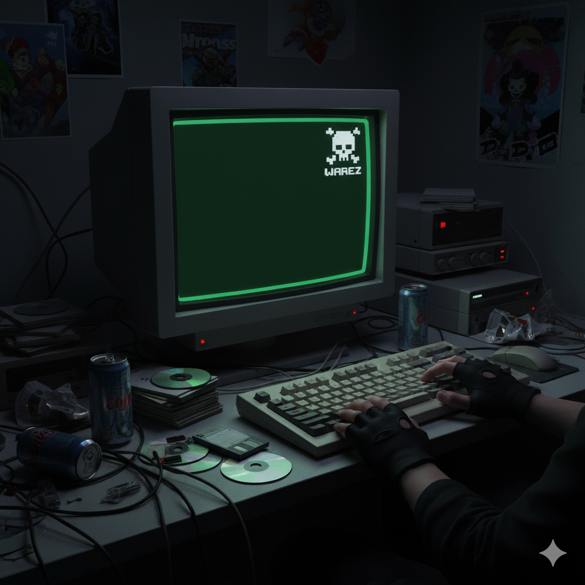
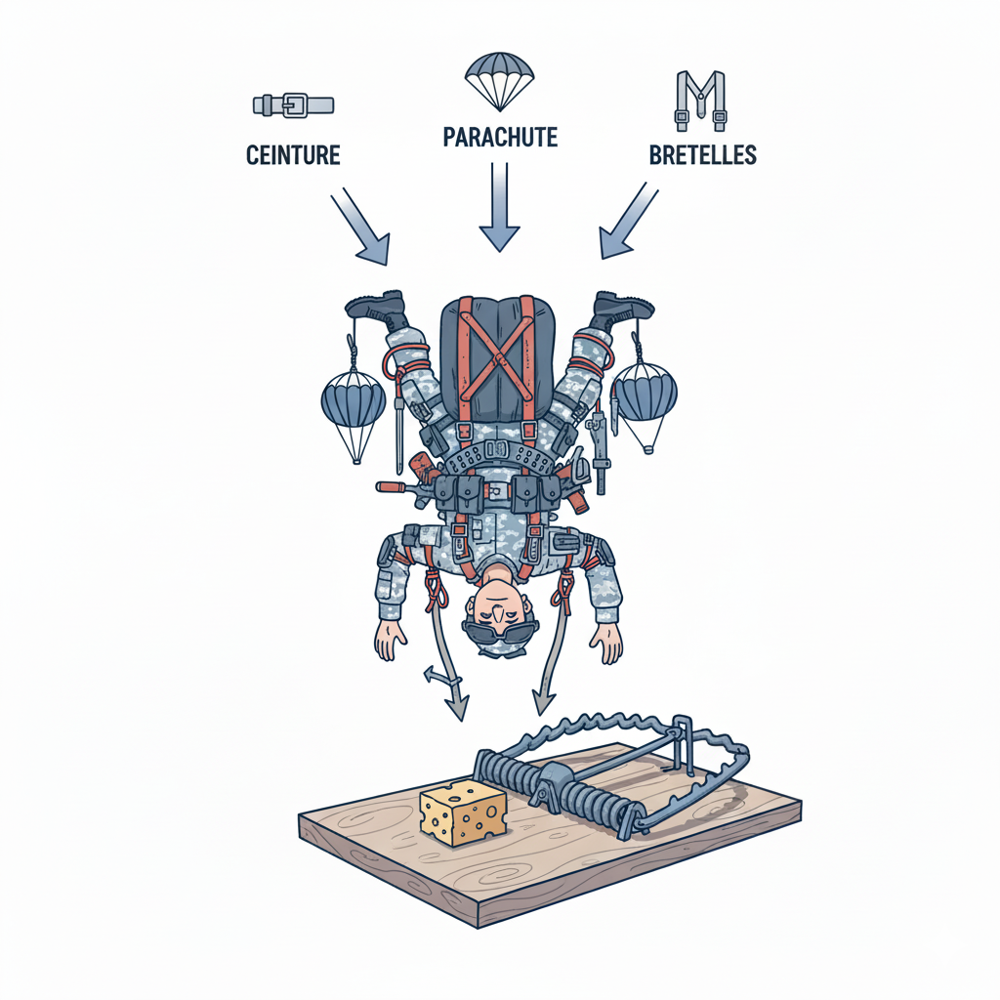

Nos meilleures erreurs … de (Cyber)Sécurité
Dominique Derrier
Pierre Le Calvez
Dominique Derrier | who0

| Officiellement |
Background |
| 0x19 XP |
OpenSource |
| Neotrust |
|
| vCISO |
CTF Builder/runner |
| iso27001 & NIST |
ESP32, Docker, Vim |
Pierre Le Calvez | Pedro

| Officiellement |
Background |
| 0x14 XP |
ex-Pentester 💀 |
| CGI |
Incident Response enthusias 💣 |
| Vice-Président Cybersécurité |
Amateur Mountain Climber 🏔 & Skimo Fan ⛷️ |
|
|
Disclaimer
👉 Les histoires sont toutes vraies-ish ;
👉 C’est drôle mais on
ne se moque pas ;
👉 On se veut bienveillant ;
👉 On peut
apprendre de l’erreur des autres ;
👉 Attention certaines sections
sont NSFW ;
👉 Aucun #LLM n’a “pas” été maltraité durant la
production de ces slides.
Participez
La fraude téléphonique ☎️
 Une
compagnie vous appelle pour de l’aide pendant une fraude téléphonique.
En effet, elle s’est rendu compte de la mise en place d’une redirection
téléphonique vers un numéro surtaxé (attack de type International
Revenue Share Fraud).
Une
compagnie vous appelle pour de l’aide pendant une fraude téléphonique.
En effet, elle s’est rendu compte de la mise en place d’une redirection
téléphonique vers un numéro surtaxé (attack de type International
Revenue Share Fraud).
Le client a déjà subi 20 000 $ de fraude
pendant la fin de semaine et vous demande un devis pour l’aider.
La fraude téléphonique ☎️
Shit in the fan

Le patching… une histoire d’amour entre les Rouges, les Bleus et
White.
Pour des raisons de reporting, le gestionnaire de projets a
eu accès à l’interface de patching.
Shit in the fan
Le Blackberry
 Mais
où sont jeté les anciens téléphones ? Dans les poubelles bien sûr…
Mais
où sont jeté les anciens téléphones ? Dans les poubelles bien sûr…
Et à votre avis … dans un telephone il y a quoi ?.
Le Blackberry
Ressource saturée
 À l’époque où
les systèmes 21 et 20 étaient les meilleures
solutions pour échanger des fichiers. Le monitoring s’est déclenchée à 2
heures du matin…
Ressource saturée
DeLock BitLocker GPO
En securité, il faut chiffrer ! Et quel est le moyen le plus simple
d’activer le chiffrement sous Windows ?
DeLock BitLocker GPO
Optimisation SSL
Les
certificats SSL : la joie des formalités administratives lors de
l’installation.
Les protocoles de validation, les communications
entre les administrateurs systèmes, ainsi que la facturation, etc. Bref,
pour simplifier, les équipes ont opté pour des formats comme
*.nomsdedomaine.com.
Optimisation SSL
On the lan
 La lettre de
mandat est signée, le test est planifié, l’équipe lance la phase de
reconnaissance dans l’entreprise.
La lettre de
mandat est signée, le test est planifié, l’équipe lance la phase de
reconnaissance dans l’entreprise.
Comme c’est le premier test,
l’équipe rouge sait qu’elle va trouver des surprises.
On the lan
Darknet
Il
semblerait qu’on puisse trouver toutes les informations du monde sur le
DarkNet pour ceux qui savent chercher.
Rien de tel qu’une
démonstration devant le PDG pendant la réunion du conseil
d’administration.
Cela permet de signaler les dangers afin de
prendre les mesures appropriées.
Darknet
Mots de passe
Lors
d’un pentest, l’idée est de recueillir un maximum de condensats de mots
de passe pour en éprouver la solidité.
C’est quoi le pire mot de
passe sur lequel vous puissiez tomber… ?
Mots de passe
Pentest
Un test
d’intrusion qui s’est bien déroulé (du bonbon pour les pentesteurs).
L’équipe est parvenue à pénétrer le système et a déployé un logiciel
malveillant sur un serveur pour récupérer le sésame magique.
Pentest
Le postit du président
Voute de mot de passe
Le postit du président
Raid
 À une
époque où les machines physiques étaient au cœur de notre quotidien,
bien avant l’apparition de la virtualisation, des conteneurs et du
cloud, un disque est tombé en panne. Nous avons alors contacté le
support et ouvert un dossier auprès du fabricant. Cependant, quelques
minutes après que le technicien ait confirmé avoir terminé son
intervention, “il suffit juste d’un redémarrage pour s’assurer que tout
fonctionne correctement”.
Raid
Le phishing
 La
sensibilisation par le phishing est l’un des premiers outils de
sensibilisation marquants pour les équipes et les entreprises de toute
taille qui utilisent l’informatique.
La
sensibilisation par le phishing est l’un des premiers outils de
sensibilisation marquants pour les équipes et les entreprises de toute
taille qui utilisent l’informatique.
Comment une
sensibilisation par phishing peut-elle vraiment mal tourner ?
Le phishing
Guess Who
Identifier le patient zéro ou déterminer qui est à l’origine de
l’attaque n’est pas toujours évident…
Le mot de la fin …
Même si
👉 l’amélioration continue ;
👉 les formations
disponibles ;
👉 les outils ;
👉 l’intelligence artificielle ;
Bonne nouvelle: Les enjeux de sécurité subsisteront,
et les erreurs humaines ne disparaîtront pas. Nous aurons encore le
temps d’apprendre de nos erreurs, et il est essentiel d’y mettre une
dose d’humour dans le processus d’amélioration continue afin de
progresser.